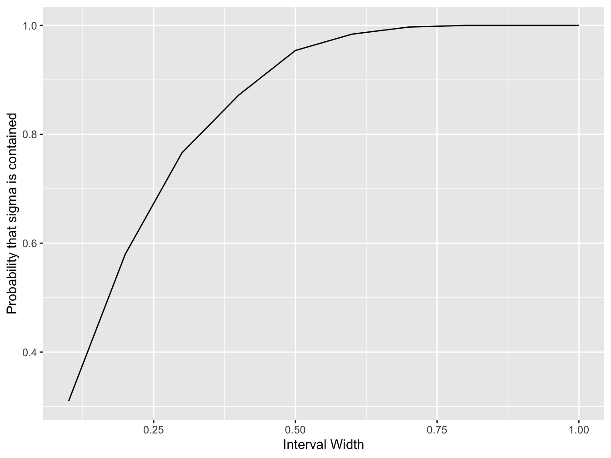

Model Answer: Confidence Interval
Can you devise a way to compute a confidence interval for the population standard deviation?
You can make use of the following as a point estimate of the sample variance:
\[ s^2 = \frac{1}{n - 1}\sum_{i = 1}^n (x - \bar{x})^2 \]
which can be calculated using the sd function in R, remember the relationship between the standard deviation and variance.
# create a vector to store the number of times
# the population variance is contained
sigma_contained <- rep(0, n_interval_widths)
for (replicate in 1:nreps) {
x <- rnorm(n, mean = mu, sd = sigma) # simulate a data set
sigmabar <- sd(x) # compute the sample standard deviation
# for each interval width that we are testing ...
for (j in 1:n_interval_widths) {
# check if the interval contains the true mean
if ((sigma > sigmabar - 0.5 * interval_width[j]) &
(sigma < sigmabar + 0.5 * interval_width[j])) {
# if it is, we increment the count by one for this width
sigma_contained[j] <- sigma_contained[j] + 1
}
}
}
probability_var_contained <- sigma_contained / nreps
# create a data frame containing the variables we wish to plot
df <- data.frame(interval_width = interval_width,
probability_var_contained = probability_var_contained)
# initialise the ggplot
plt <- ggplot(df, aes(x = interval_width, y = probability_var_contained))
# create a line plot
plt <- plt + geom_line()
# add a horizontal axis label
plt <- plt + xlab("Interval Width")
# create a vertical axis label
plt <- plt + ylab("Probability that sigma is contained")
# plot to screen
print(plt)
#> interval_width probability_var_contained
#> 1 0.1 0.310
#> 2 0.2 0.580
#> 3 0.3 0.766
#> 4 0.4 0.872
#> 5 0.5 0.954
#> 6 0.6 0.984
#> 7 0.7 0.997
#> 8 0.8 1.000
#> 9 0.9 1.000
#> 10 1.0 1.000